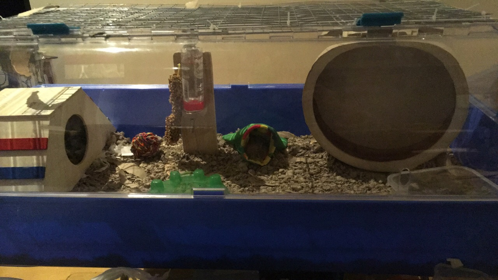
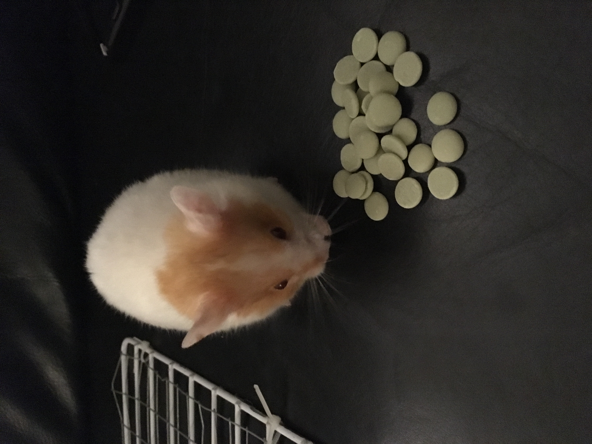

People think because hamsters are small, we can live in a small cage, but we are actually prone to boredom in small cages becase we are so active. The minimum sized cage that us hamsters should be kept in is 4000cm2, but we will be happier in something 5000cm2 or larger with plenty of bedding to burrow in. This may seem like a lot for a hamster but we love to run, dig and explore!
You already know that all hamsters should have a wheel, but this wheel should have a solid base, not bars that can hurt our feet, and again the recommended size for wheels might be a lot bigger than you expect. For Syrian hamsters like me, the wheel should be 28cm in diameter. This allows us to run with our backs flat. If our spines curve while we run, this can lead to pain and permanent harm. We can run more than 5 miles in one night!

We love to fill our cheeks with food and store it in our nests for later. Our food should have a lot of variety to keep us interested and plenty of protein to keep us healthy. For treats we love fresh vegetables, only a small piece every couple of days though! We also love nuts and seeds, and the occasional yogurt drop as a special treat. My favorite treats are carrot, broccoli and porridge.
Our teeth are always growing, so it is important for us to have toys to chew to keep them short. Wooden toys are perfect. We like to keep clean, so a sand bath is always a good addition to our cage. Dwarf hamsters love to roll in the sand, but Syrian hamsters like me usually just use it as a toilet!